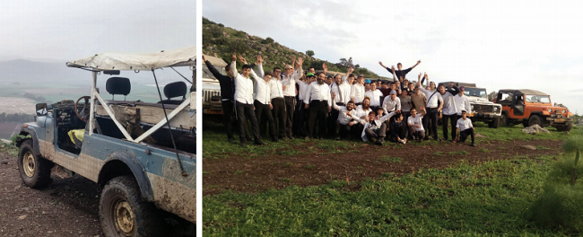

Turning an All-Terrain Jeep Ride into a Chassidic Farbrengen
If you are planning a visit to the Galil, it is worthwhile to get to know R’ Einav Vaspi. * He grew up on the moshava Yesod Hamaala as a child of pioneers to the area and turned his house into a highly active Beit Chabad. * These days, he maneuvers between his work as a farmer, a senior position in a kashrus organization, Chabad House activities, and the Chassidic tourist project he initiated. * Our journalist joined a group of students from a Litvishe yeshiva and saw how a popular tourist attraction turns into a Chassidishe farbrengen.

“You came so early?” he asked. I guess he’s not used to Lubavitchers showing up at the agreed-upon time.
Eren lags a bit behind him. “We need to hurry,” says Einav. “What do we have on the schedule for today?” Eren responds with a brief recap of the schedule, “We have the yeshiva from B’nei Brak, the Americans from Yerushalayim, and the so-and-so family from Kfar Chabad.”
R’ Einav Vaspi from Yesod Hamaala is likely known to most of our readers (having been chosen for an “extreme home makeover” on Israeli reality television, as written about in Beis Moshiach issue #892). The man never rests, his creative mind is always coming up with original ideas to pursue.
Einav is the son of one of the old-time families of Yesod Hamaala, where he grew up and lived for most of his life. Ever since he became a baal teshuva, over twenty-five years ago, he turned his home into a place of spreading the wellsprings of Judaism and Chassidus through a variety of original methods, whose common denominator is lots of giving, hosting, and providing a good time.
CHASSIDIC MESSAGES FOR YESHIVA BOYS
The time is nine in the morning. The somewhat somnolent street in the pastoral village turns into a miniature B’nei Brak. Tens of excited yeshiva students crowd the yard that is clearly identified with Chabad. A large Moshiach flag flutters in the light wind. They point, whisper among themselves, smile, and look all around them with open curiosity. Eren approaches the group and lays down a sleeve of plastic cups and some bottles of cold water on the table. “Come, take a drink,” he invites, and the boys respond to the invitation thirstily.
Two older rabbis approach Einav and discuss matters with him off to the side, finalizing the last details before setting out. One of them appears to be the spiritual authority of the camp, older, wearing a tie and an elegantly cut kapota, as befitting a Torah scholar. The younger of the pair, dressed somewhat sloppily, seems to be the administrator of the camp.
The group of boys crowd around a tall bespectacled boy with a baby face and a shiny shock of hair in a wave across his forehead. He holds forth animatedly and has the full attention of the group. It seems that he has been here before on a number of occasions. Speaking in the manner of someone who is “in the know,” he declaims, “My family comes here regularly. Last year, we spent a Shabbos here with the whole family.” As he continues, it is apparent that he is enjoying playing the “spoiler” for some of the new boys, telling them about some of the surprises in store for them during the day.
The rabbis return to the group, and the younger one gathers them together for a briefing. Almost as if planned to the moment, it is exactly then that a number of open jeeps with crossbars on top pull up onto the road adjoining the yard. The elder rabbi addresses the excited students, reminding them that even on an outing it is necessary to remember the status of a ben-Torah and to behave accordingly. It seems that the guys know the speech by heart already, because they are only listening with half an ear, their eyes glued to the high all-terrain vehicles with their massive wheels that seem ready to tear up the steep hills and rocky wadis, leaving a cloud of dust in their wakes.
Now it is Einav’s turn to speak and the boys grow alert. He explains the course to them in brief along with the rules of the “dos and don’ts.” He divides them into two groups. The first group remains behind on site, while the second group is divided among the jeeps. Einav explains to me, “That is the accepted way of doing things. It saves money for the customer. However,” he confides to me as the motors roar in the background, “we have another motive as well. While the first group remains behind, they experience being in and around a Beit Chabad. They wander around the site, and sometimes we even arrange an activity or a speaker for them. Obviously, all of this is focused around conveying messages of Chassidus.”
Einav invites me to join the tour. He will not be the driver; he is there as the escort. Our vehicle has seating for three in the front, and I sit next to him. The procession sets out, heading south, crossing through Kibbutz Hulata. Einav explains to them that the kibbutz was founded two years before WWII by pioneers from among the founders of Yesod Hamaala, who wanted to expand the settlement of the Hula Valley, which was then an area that was filled with swamps.
Himself from a family of the original pioneers who helped settle the valley and found the moshava of Yesod Hamaala, he explains to the bachurim the difference between a kibbutz and a moshav, in terms of the difference in personality types of the residents. He concludes his remarks by telling them that there is already a regular minyan in Hulata, as a result of the Chabad outreach carried out by him and fellow Lubavitchers in the area.
Whispered exclamations of amazement are heard from the passenger compartment, referred to simply as “the box,” although I sense a somewhat cynical tone. One of the fellows decides to begin to clap and the others join in, and it seems that maybe the cynicism might be giving way to a real appreciation for those that carry out the shlichus work of the Rebbe.
CHASSIDIC LESSONS FROM REAL LIFE WELLSPRINGS
We left Hulata by way of the farming area south of Lake Hula. Einav asked the driver to stop and the rest of the procession came to a standstill. Everyone disembarked and gathered around Einav, who told about the history of the lake, also called Mei Marom.
“The lake is fed from three large rivers whose water source is in the Golan Heights area. The names of the rivers are the Chatzbani River, the Banias River, and the Dan River,” he explains, and then asks if anybody knows the first letter acrostic of the names of the three rivers. A quick thinking bachur replies, “Chabad,” to which Einav responds by explaining that, “The same is true of the soul. We have three sources that influence our thoughts, our feelings and our behaviors, namely the Chabad, Chochma-Bina-Daas. These are the three faculties of intellect referred to in Chassidus as ‘mochin.’ They are the root of everything, they define reality and then influence the heart, the emotions and behavior.
“The Baal Shem Tov told about how he went up to the chamber of Moshiach and asked him, ‘When are you coming?’ Moshiach answered him, ‘When your wellsprings will be spread forth.’ It is not out of the blue that the spreading of the teachings of Chassidus is referred to as ‘spreading the wellsprings.’ You can see for yourself how much the springs gush, giving life to the whole area, and that is exactly the function of Chassidus.” I get to see, firsthand, R’ Vaspi delivering a brief class in Chassidus to the students of a Litvishe yeshiva.
Einav segues seamlessly into an account of the history of the lake; the marshes around it and the diseases that they once spread; the first pioneer settlers who settled the area and were confronted with malaria and the accompanying ague, and decided to drain the swamps at great risk to their lives. “By the way, draining out the swamps, which was considered one of the most courageous triumphs on the part of those pioneers, was discovered in recent years to have been an ill-considered move as it disturbed the ecological balance of the entire area. Now, the various agencies involved are trying to flood the valley again, in order to somewhat correct the damage caused by drying out the swamps.”
The lesson concludes, and everybody trots off back towards the jeeps. He assures them that at this point is when the extreme driving course begins, and they are all excited. We proceed southward toward the mountainous section of the Jordan River. The road becomes steep, and the all-terrain vehicles are climbing and dipping sharply. “Here is the amusement park for jeeps,” he tells me half-jokingly. A sudden and high-speed rise by the jeep causes the frolicking fellows in the back to start shrieking in panic, followed immediately by sighs of excited amazement. Einav spots me clutching the metal handle at my side and he reassures me with, “Don’t worry. All of the drivers are highly skilled. They know the territory very well. Also in the spiritual sense.”
“What is that supposed to mean?” I ask. He explains, “All of the drivers are our mekuravim. They are familiar with the outreach work, the Beit Chabad, the preschools. When I am not around, they make sure to tell the groups of tourists about Chabad and the work that we do.”
We begin to move eastward, and we cross the Jordan River at the Gesher HaP’kak and make another stop. Einav explains about the water sources of the Jordan River, which in turn feeds into the Kinneret and then flows from there down into the Dead Sea (Salt Sea). “Who knows why the Salt Sea is called the ‘Dead Sea,’ whereas the Kinneret is a sweet-water lake?” he asks. The yeshiva students try to come up with all sorts of reasoning, throwing out possible suggestions.
“The answer is because the Kinneret is such that whatever it receives it passes on, whereas the Salt Sea, whatever it receives it keeps for itself and does not share; that is why it is called the Dead Sea,” he explains with a mischievous smile, conveying the lesson of mutual concern and giving.
He walks down from the main road on foot and ducks down behind a mound of earth. We all follow him to a spot on the East Bank of the Jordan River, from where it is possible to enter the water. At this spot, the Jordan is calmer and more placid. The boys don’t think twice and they all jump into the water. Some of them take off some items of clothing and others go in with full yeshiva regalia.
“At this time of the year, you can’t ride this track without making a stop to go into the water,” Einav tells me. “When you come out of the water, it keeps you refreshed for a half hour to an hour, as if you were in an air-conditioned room.”
This is not the last time they will go into the water on this tour. It happens again a short time later at the pools under the Devora Waterfall in the Golan Heights.
DANCING TO YECHI ADONEINU
We move on, beginning the climb up the mountains of the Golan Heights. The colors change. Red earth and basalt rocks replace the green and brown of the Hula Valley and banks of the Jordan. We cross over the El Fagar and Ein Tina springs and once again disembark to proceed on foot.
Einav leads the way, and we climb upward until we reach a comfortable viewing site. The heat is oppressive and the clouds obscure the view into the distance, but he explains that from this spot it is possible to see all of the borders of Eretz Yisroel.
Once again, he challenges the boys with a question, “Who here knows the names of the three other lands that will be added to Eretz Yisroel and when this will happen?” He then goes on to explain about the lands of the “Keini, Kenizi, and Kadmoni,” which will be added in the future redemption, which will come very soon.
The mention of Moshiach and Geula triggers the group and they begin to sing on their own, “Yechi Adoneinu Moreinu V’Rabbeinu Melech HaMoshiach L’olam Va’ed.” The Roshei Yeshiva stand off on the side and smile with embarrassment, but the singing only picks up. Einav seizes the opportunity and puts his hands on the shoulders of two of the boys, and within seconds there is a large circle of yeshiva boys from B’nei Brak singing Yechi Adoneinu somewhere in the middle of the Golan Heights, kicking up a dust storm with their dancing feet, to the accompaniment of the mountain echo.
As we head back to the vehicles, I am still a bit thrown by the whole experience, but Einav acts as if it is the most natural thing in the world. He tells me, “Things like this happen all the time. I speak to them about Moshiach, sometimes they start to sing and sometimes they ask questions and start conversations. But it always ends on a positive note.”
ENJOYMENT AND EXPOSURE TO CHASSIDIC IDEAS
In recent years, Einav’s tourism project has become a major hit among the Litvish and Sefardic communities. Without any advertisements, just by word of mouth from people who have enjoyed the experience, it has spread to B’nei Brak, Kiryat Sefer and the like and the people stream to the north.
“When people are on tour and enjoying themselves, you are able to bring out positive feelings in them. In such a setting they are more open and more ready to listen without opposition and arguments. I speak to them about Moshiach, about the Rebbe, about Chassidus, and it is all accepted quite nicely.”
Einav pulls out his phone and shows me, “Look, yesterday we did a jeep tour for a very respected Litvish rav and his family. He is one of the heads of a national kashrus certification which I am connected to through my work. Look at what he sent me today.” I look at the text message that read, “We all enjoyed ourselves very much, Yechi HaMelech!”
“Because people enjoy themselves, they come back for a Shabbos. Each Shabbos, families from all communities and streams of Judaism come here, and they really experience a special Chassidic Shabbos, with the davening, classes and farbrengens. It is a very unique experience,” he concludes.
We start to proceed homeward toward Yesod Hamaala. The second half of the group that is still waiting in the yard is enjoying a program with Chassidic content, overseen by those who work for Einav.
At the edge of Yesod Hamaala, we pass blossoming fruit orchards. Plums, nectarines, apricots, and other summer fruits are in peak season. Einav arranges a small surprise for us. He tells the driver to stop, calls the owner of the orchard and asks for permission to enter and pick fruit with the tour group. Permission is granted, and the boys get to go in, pick the fruit and make a blessing and enjoy the sweet fruits in the shade of the trees.
While we are there, Einav again gathers them together and gives a fascinating talk about farming, botany, agronomy, and kashrus. This time he speaks wearing the hat of an expert and veteran in the field of kashrus as it relates to farmed produce. He tells them about the various problems that arise for the kashrus supervisors in farming-related matters. After close to two hours of thorough enjoyment, we return. The first group exits the vehicles and gets settled on the grass to rest and eat lunch, while the second group boards the jeeps.
For them, the experience is about to begin…
Beis Moshiach (staff). "Turning an All-Terrain Jeep Ride into a Chassidic Farbrengen." Beis Moshiach, no. 1146 (December 20, 2018).